Featured
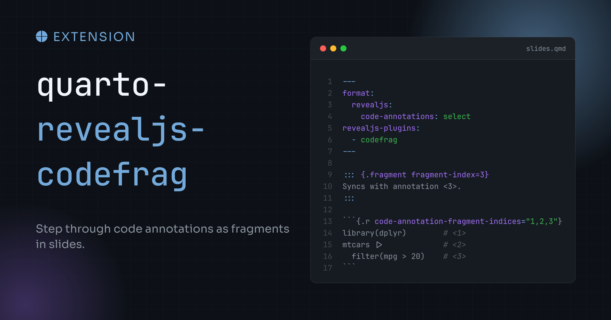
Code Annotation Fragments
A Reveal.js plugin that enables fragment-based keyboard navigation through code annotations in Quarto presentations.
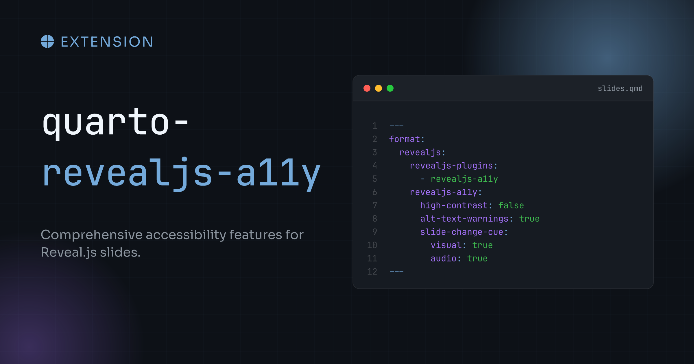
A11y
A Quarto Reveal.js plugin providing accessibility enhancements: skip navigation, focus indicators, reduced motion, high contrast mode, font and text-spacing controls, colour overlays, ARIA slide landmarks, and screen reader announcements.
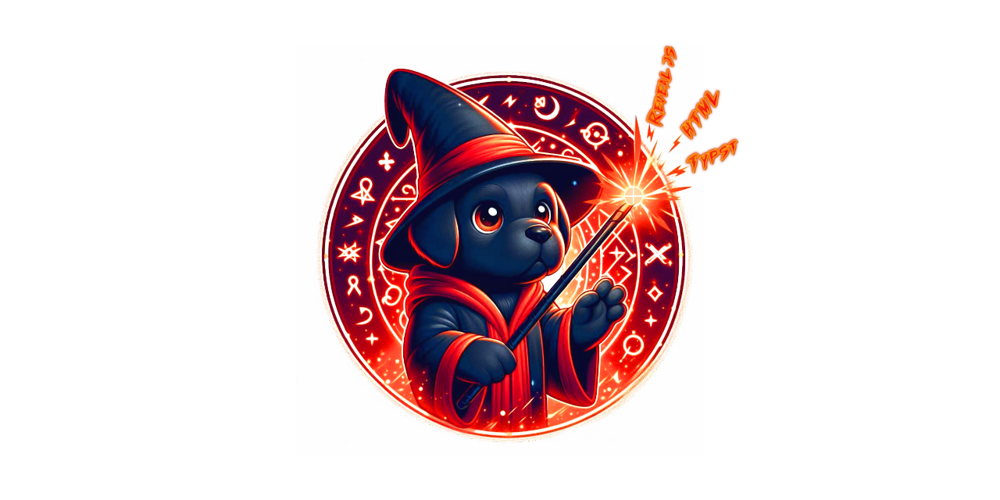
Quarto Wizard
Quarto Wizard is a Visual Studio Code extension that assists you in managing Quarto projects.

ggpacman
A `ggplot2` and `gganimate` version of Pac-Man.
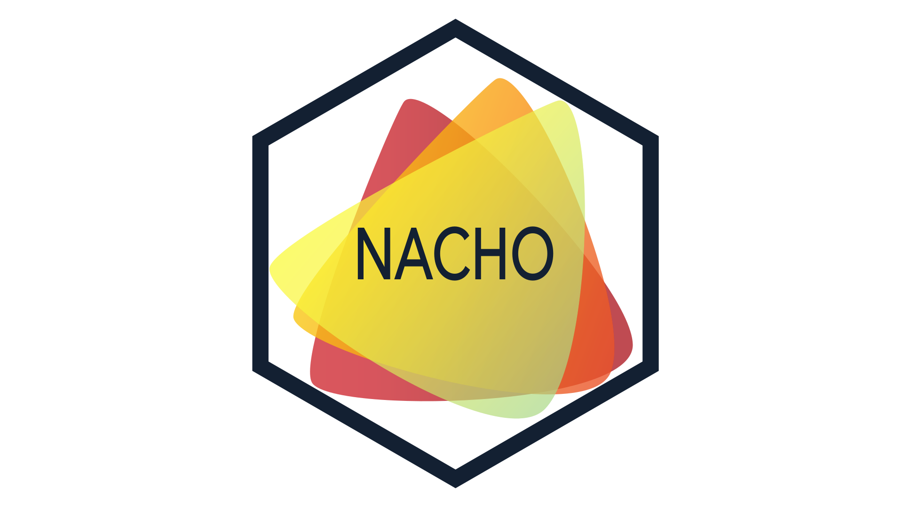
NACHO: NAnostring quality Control dasHbOard
A shiny-based dashboard to load, visualise and normalise the exported NanoString nCounter data and facilitates the user in performing a quality control.
Quarto Extensions 32
-
Code Annotation Fragments
A Reveal.js plugin that enables fragment-based keyboard navigation through code annotations in Quarto presentations.
Quarto Extension Reveal.js Code Annotations Fragments -
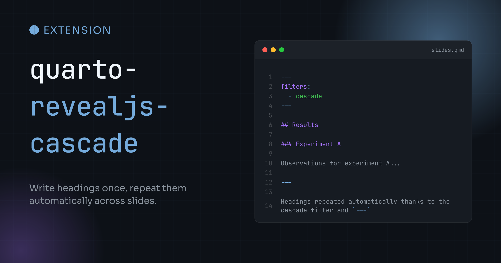
Cascade
A Quarto extension that automatically repeats the heading chain when new Reveal.js slides are created with `---`, following the DRY principle.
Quarto Extension Reveal.js Headings -

Fragmention
A Quarto filter extension that hoists `.fragment` attributes from empty marker spans to their parent list items in Reveal.js presentations, so bullets and numbers appear together with their content.
Quarto Extension Reveal.js Fragments Lists -
A11y
A Quarto Reveal.js plugin providing accessibility enhancements: skip navigation, focus indicators, reduced motion, high contrast mode, font and text-spacing controls, colour overlays, ARIA slide landmarks, and screen reader announcements.
Quarto Extension Reveal.js Accessibility A11y -
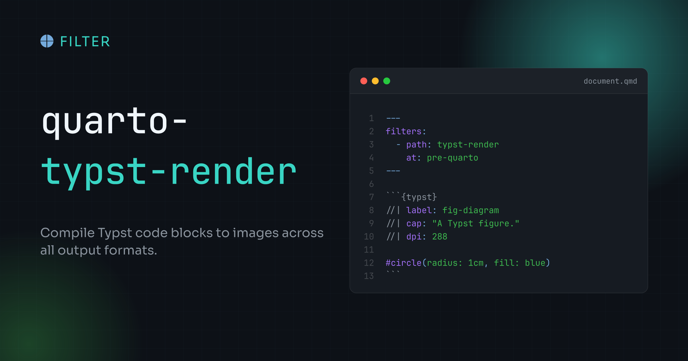
Typst Render
A Quarto filter extension that compiles Typst code blocks and inline expressions to images (PNG, SVG, PDF) using the Typst binary bundled with Quarto, making Typst output usable across all formats.
Quarto Extension Typst Filter -

Code Window
A Quarto extension that adds window-style decorations (macOS traffic lights, Windows title bar buttons, or plain filename bars) to code blocks in HTML, Reveal.js, and Typst outputs.
Quarto Extension Code HTML Reveal.js Typst -

Offcanvas
A Quarto extension providing a simple way to create Bootstrap 5 offcanvas sliding panels in HTML documents.
Quarto Extension Bootstrap Offcanvas HTML -

Tabset
Quarto extension enabling proper tabset navigation with keyboard controls and PDF export support for Reveal.js presentations
Quarto Extension Reveal.js Tabset Navigation -

Remember
An extension for Quarto to save and restore navigation position across page visits for both HTML documents and Reveal.js presentations.
Quarto Extension bookmark remember navigation-tracker -
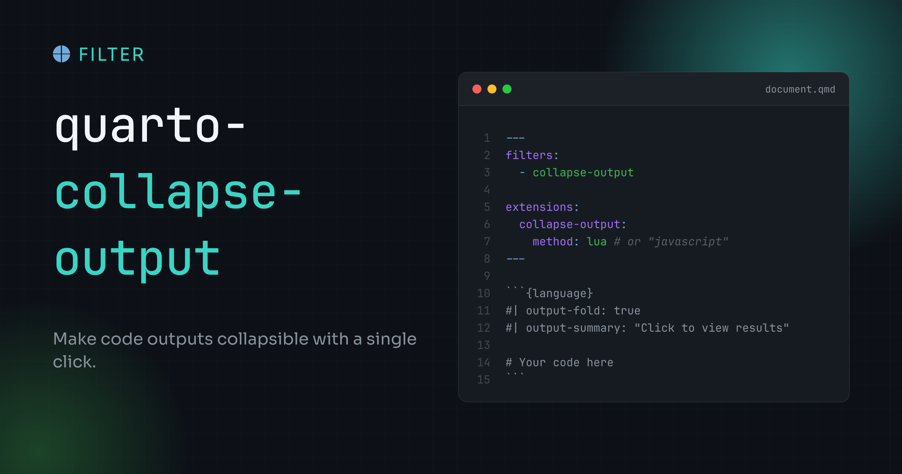
Collapse Output
A Quarto extension that provides the ability to collapse code cell outputs in HTML documents using collapsible `
` elements.Quarto Extension Collapse Details Code Output -

Git Link
Use Git hosting platforms references (commits, issues, discussions, and pull requests) directly into your Quarto documents.
Quarto Extension Git Auto-link Short-link GitHub GitLab Bitbucket Gitea -
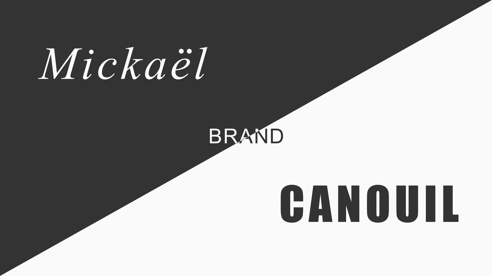
Mickaël CANOUIL
A Quarto extension that provides brand theming and styling for documents (HTML, Typst) and presentations (Reveal.js).
Quarto Extension Brand Typst HTML Reveal.js -
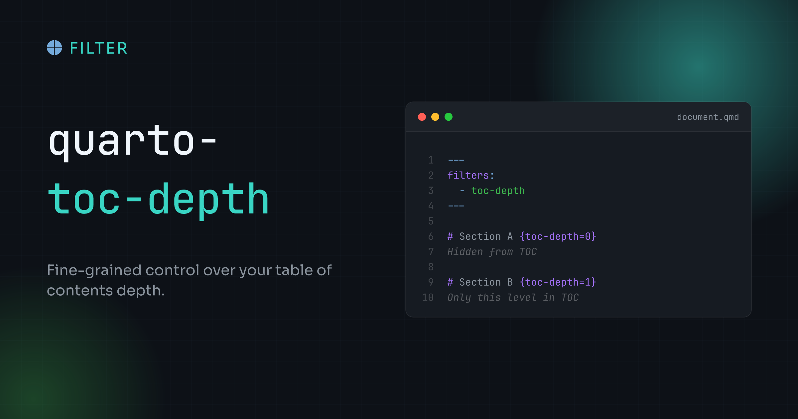
TOC Depth
A Quarto extension that provides fine-grained control over table of contents depth at the header level.
Quarto Extension TOC Depth Table of Contents -
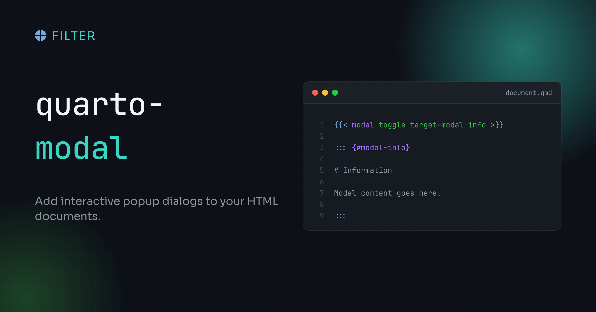
Modal
A Quarto extension providing a simple way to create Bootstrap modals in your HTML documents.
Quarto Extension Modal Bootstrap -
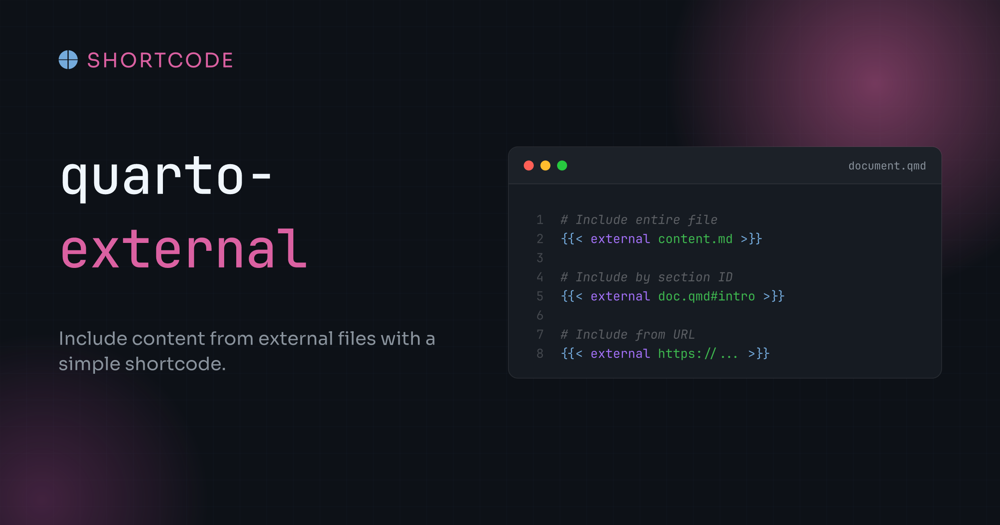
External
Quarto extension to include content or partial content from external file.
Quarto Extension Include External -

Language Cell Decorator
Quarto extension to add a decorator to the code cells to display the language name.
Quarto Extension Language Decorator -

Div Reuse
The power of "code/content reuse" for seamless and efficient content creation.
Quarto Extension Code Reuse -
Quarto Wizard
Quarto Wizard is a Visual Studio Code extension that assists you in managing Quarto projects.
Quarto Extension Quarto Wizard Visual Studio Code Positron -

GitHub
Use GitHub short references (commits, issues, discussions, and pull request) directly into your Quarto documents.
Quarto Extension HTML Reveal.js LaTeX Typst Docx -

Highlight-text
Quarto extension that allows to highlight text in a document for various formats: HTML, LaTeX, Typst, and Docx.
Quarto Extension HTML Reveal.js LaTeX Typst Docx -

-

Version Badge
Badge is an extension for Quarto to provide a shortcode to display software version or anything as a badge.
Quarto Extension HTML -

Preview Colour
A Quarto extension to add preview colour as a coloured symbol next to colour code.
Quarto Extension HTML Reveal.js LaTeX -
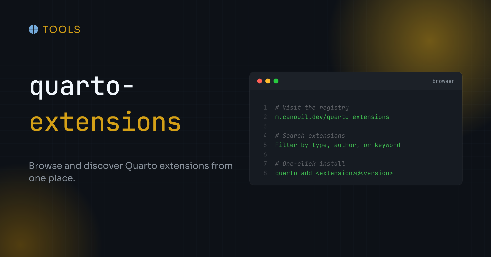
Quarto Extensions
A listing of Quarto extensions using GitHub API to retrieve information from the repositories.
Quarto Extension Listing Quarto Wizard -
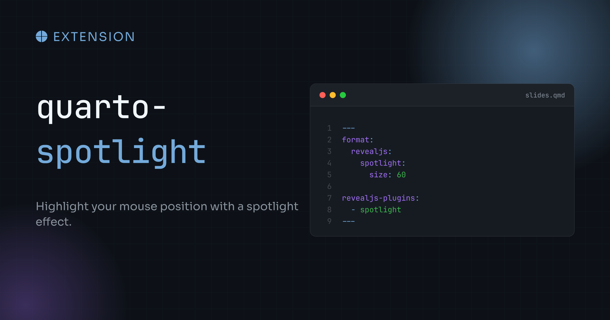
Spotlight
A Quarto extension for `Reveal.js` allowing to highlight the current mouse position with a spotlight.
Quarto Extension Reveal.js -
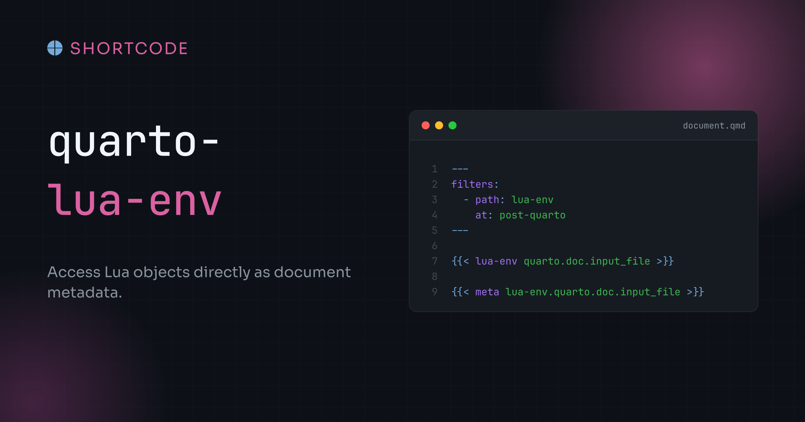
Lua Env
`lua-env` is an extension for Quarto to provide access to LUA objects as metadata.
Quarto Extension -

-

-

-
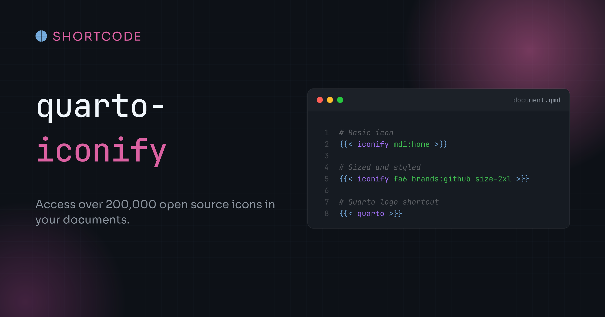
Iconify
A Quarto extension providing support to free and open source icons provided by **Iconify**.
Quarto Extension HTML -
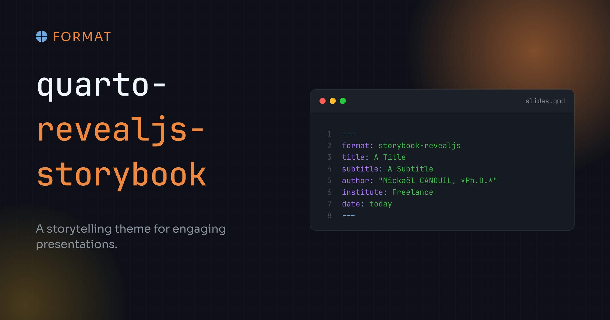
Storybook
A old tale book style Quarto template extension for Reveal.js presentation.
Quarto Extension Format Reveal.js -
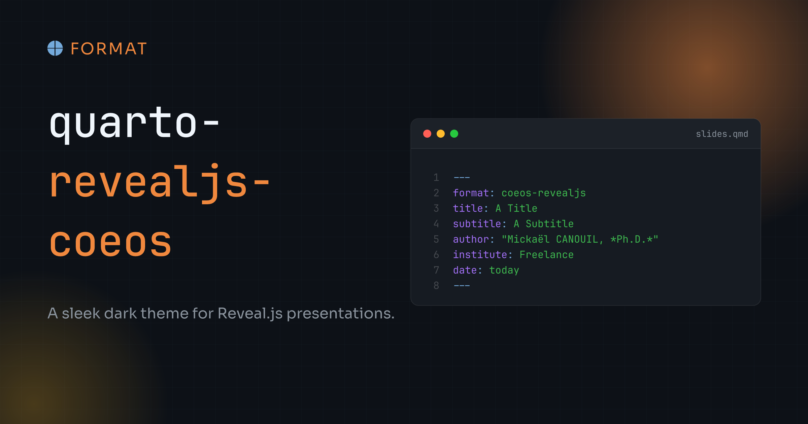
Coeos
A dark grey Quarto template extension for Reveal.js presentation.
Quarto Extension Format Reveal.js
R Packages 5
-
-
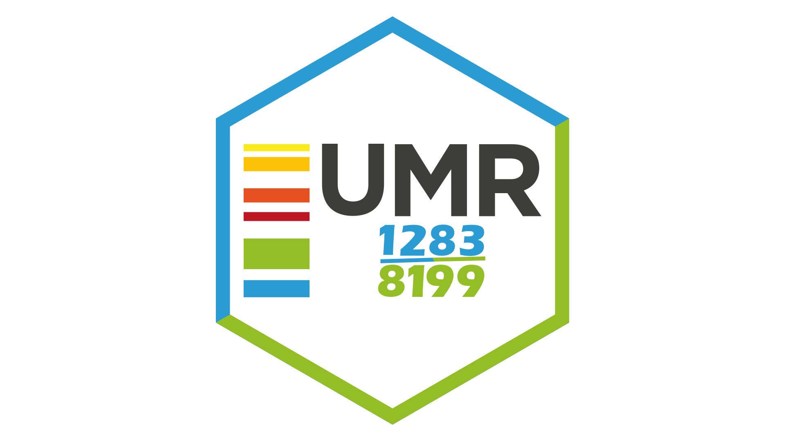
umr1283: UMR 1283 - Project Template
An R package to create the project structure within the Inserm U1283 / CNRS UMR 8199 unit.
R package -
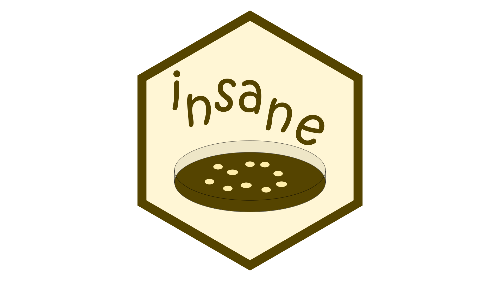
insane: INsulin Secretion ANalysEr
A user-friendly interface, using Shiny, to analyse glucose-stimulated insulin secretion (GSIS) assays in pancreatic beta cells or islets.
R package -

MiSTr: Mixed effects Score Test
Test for association between a set of SNPS/genes and continuous or binary outcomes by including variant characteristic information and using (weighted) score statistics. `MiSTr` is an improvement of the [`MiST`](https://cran.r-project.org/package=MiST) outputs.
R package -
NACHO: NAnostring quality Control dasHbOard
A shiny-based dashboard to load, visualise and normalise the exported NanoString nCounter data and facilitates the user in performing a quality control.
R package
Tooling & GitHub Actions 2
-
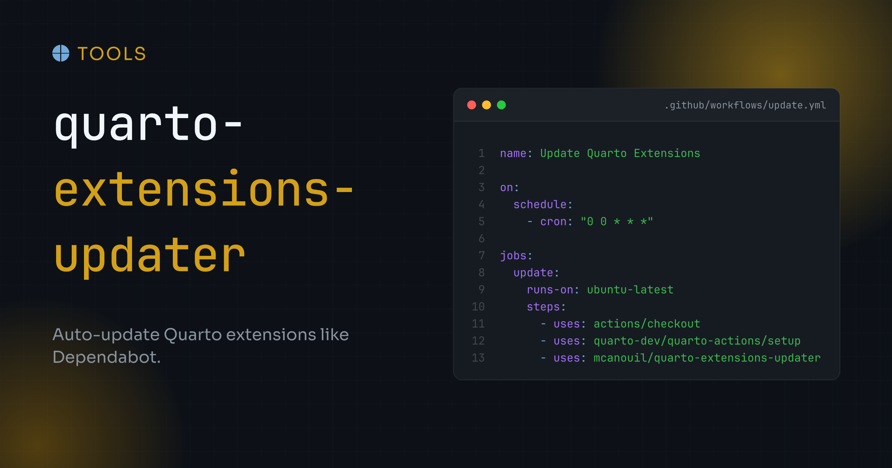
Quarto Extensions Updater (GitHub Action)
A GitHub Action that automatically updates Quarto extensions in your repository, similar to how Dependabot manages dependencies.
Quarto Extension GitHub Action Quarto Wizard -

Quarto Workflows
Reusable GitHub Actions workflows to release Quarto extensions and deploy Reveal.js slides to GitHub Pages.
Quarto GitHub Action Reveal.js
Workshops & Courses 4
-
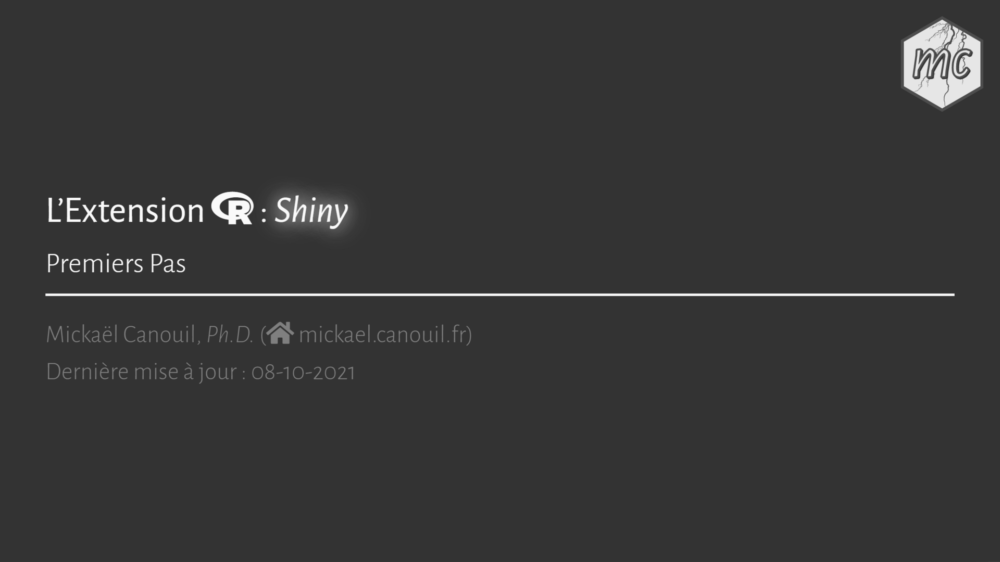
-
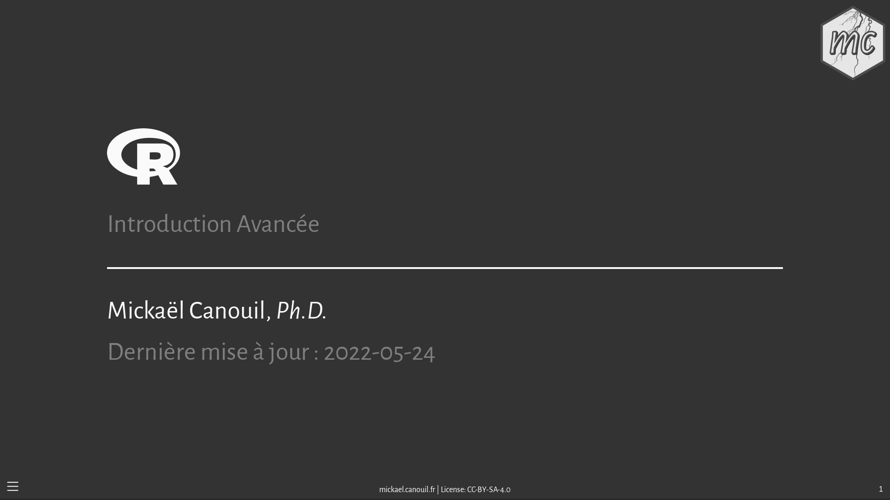
R Advanced Introduction (French)
A 6-hours introduction workshop/course on objects and types in R.
Workshop Course R French -
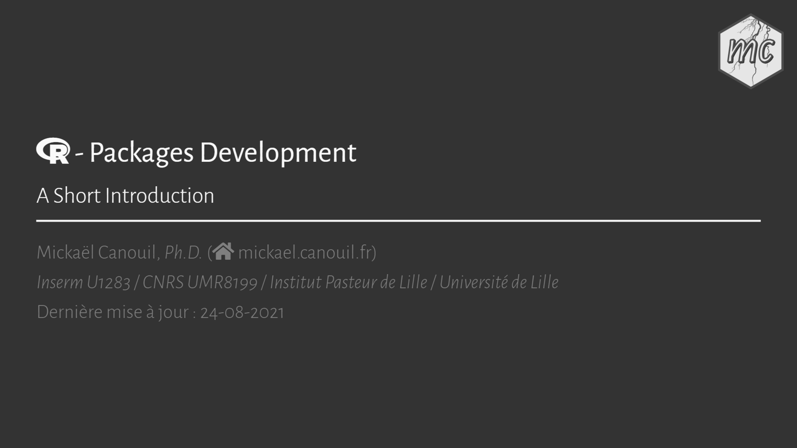
-

R and Databases (French)
A two-days workshop on R and databases (+ web scraping).
Workshop R Database French
Websites & Communities 3
-
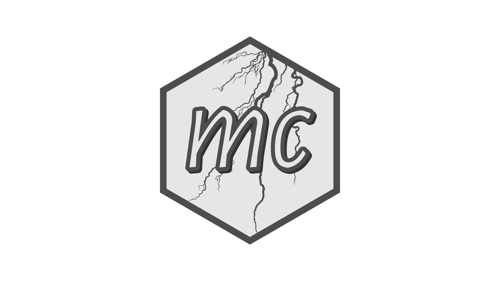
-

-
R Lille
R Lille is an R User Group (RUG) located in Lille, France. R Lille is part of the [Meetup](https://www.meetup.com/) RUG network sponsored by the [R Consortium](https://www.r-consortium.org/).
R User Group
Other 3
-
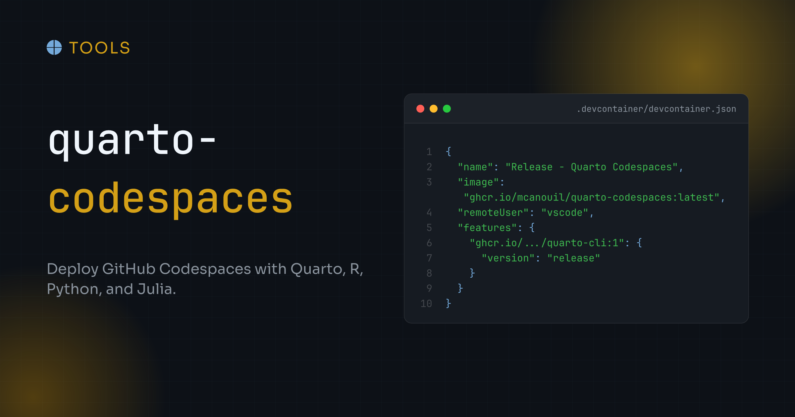
Quarto Codespaces
A Quarto Codespaces / Dev Containers setup for quick online testing of Quarto projects.
Quarto Codespaces Dev Containers -
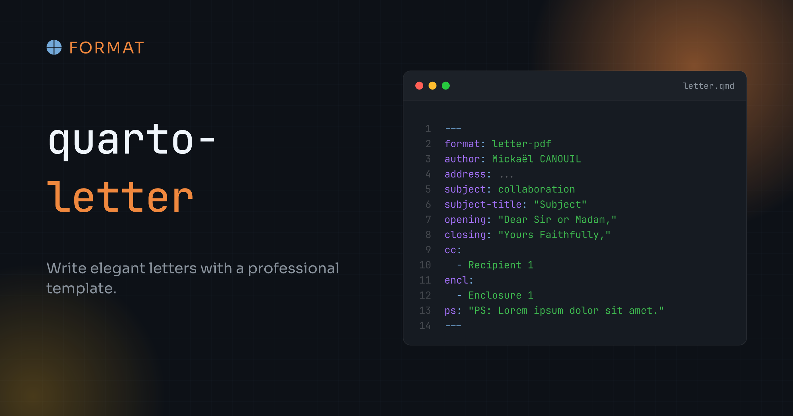
Letter
A Quarto template that assists you in creating a manuscript using the letter format.
Quarto Format LaTeX -
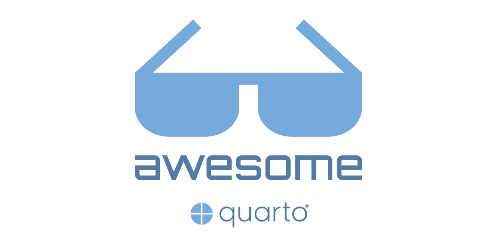